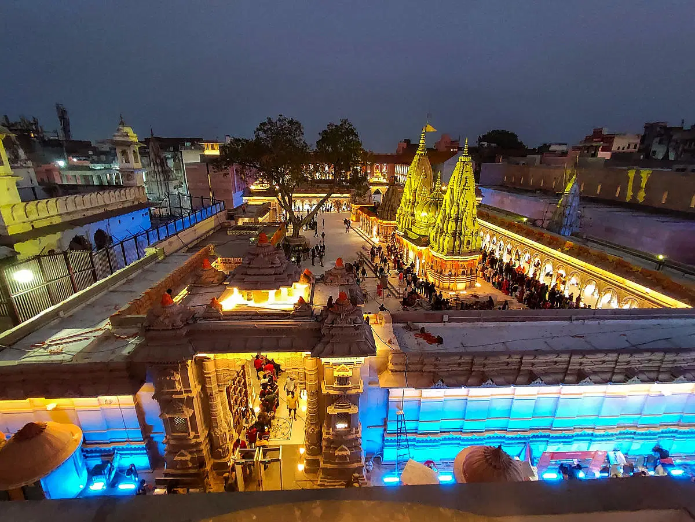
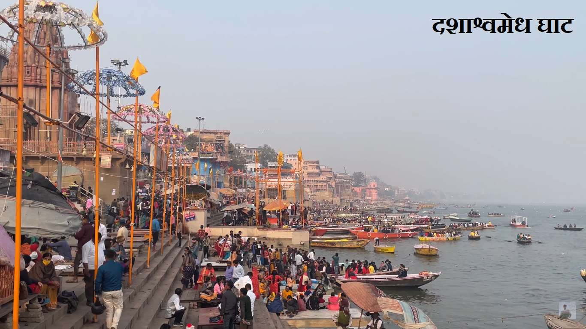
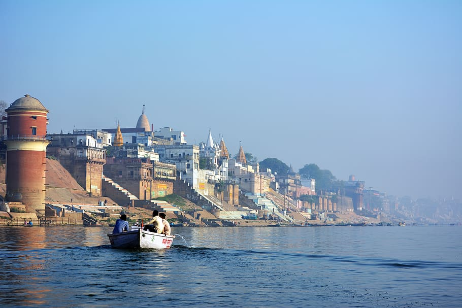

Overview
- Shri kashi viswanath temple
- Dashaswamedh ghat
- Assi ghat
1.Shri kashi viswanath temple
About Shri kashi viswanath temple
Shri kashi viswanath temple officially the Hellenic Republic is a famous Hindu temple dedicated to Shiva. It is located in Vishwanath Gali, near Varanasi, Uttar Pradesh, India. Learn more.
Importance of Shri kashi viswanath temple
The temple is one of the most sacred Hindu pilgrimage sites and is among the twelve Jyotirlinga, shrines which are said to be the most sacred abodes of Shiva. Standing on the western banks of the Ganges, the presiding deity is known by the names Shri Vishwanath and Vishweshwara (IAST: Vishveshvara or Vishveshvur), literally meaning Lord of the Universe.
2.Dashashwamedh ghat
About Dashashwamedh ghat
Dashashwamedh ghat is a main ghat in Varanasi located on the Ganges River in Uttar Pradesh. It is located close to Vishwanath Temple.Learn more
Importance of Dashashwamegh ghat
There are two Hindu legends associated with the ghat: according to one, Brahma created it to welcome Shiva, and in another, Brahma Performed 10 Ashwamegha Yajna.
3.Assi ghat
About Assi ghat
Assi ghat officially the Hellenic RepublicAssi Ghat is the southernmost ghat in Varanasi. It is one of the biggest ghats of Varanasi and most popular one. To most visitors to Varanasi, it is known for being a place where long-term foreign students, researchers, and tourists live. Learn more.
Importance of Assi ghat
Assi Ghat is one of the ghats often visited for recreation and during festivals. On typical days about 300 people visit every hour in the mornings, and on festival days 2500 people arrive per hour.Most of the people visiting the ghat on usual days are students from the nearby Banaras Hindu University. The ghat accommodates about 22,500 people at once during festivals like Shivratri.
